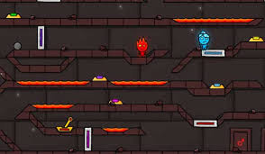
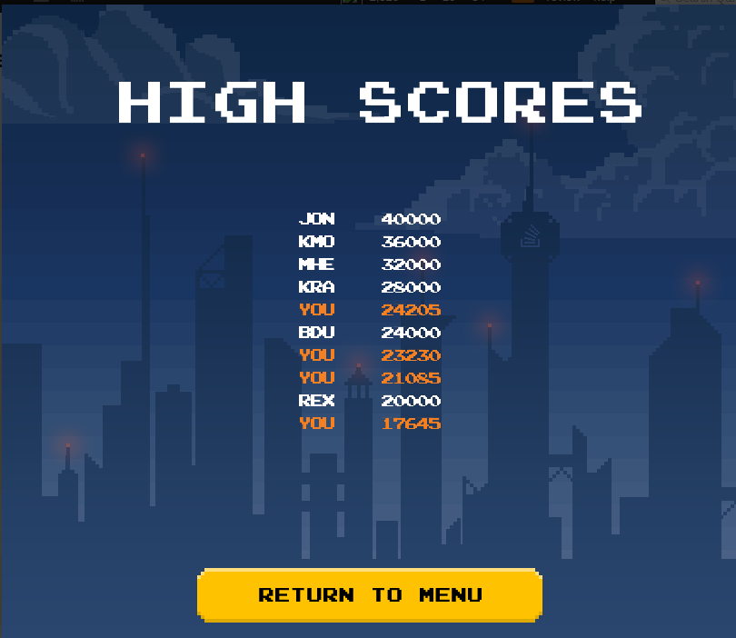
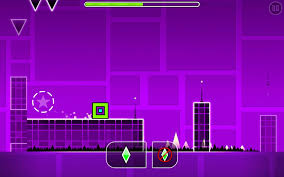
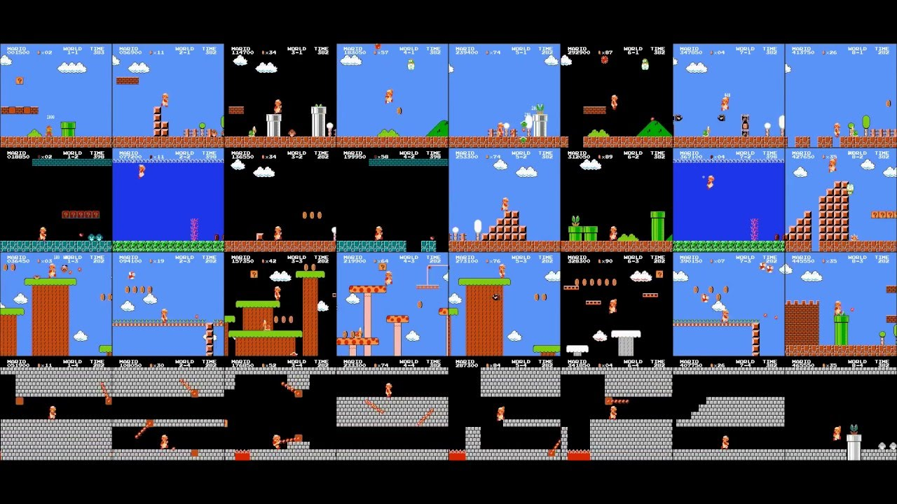

Not Fireboy and Watergirl
Project Plan
Description: Milestones, External Team Schedule, Internal Team Schedule, Additional Items if Time Permits, and Additional items cut due to time




-----------------------------------------------------------------------------------------------------------------------------------------------------------------------------------------------------------------------
Milestones
1st Milestone - Pitch and Website
2nd Milestone - 1st Check-in and other Check-ins
3rd Milestone - Prototype
4th Milestone - Presentation
5th Milestone - Final Product
-----------------------------------------------------------------------------------------------------------------------------------------------------------------------------------------------------------------------
Internal Team Schedule
For out internal team schedule as a team we want to do check-ins and talk about the project actively everyday or every other day on discord.
We usually would be talking about project roadblocks, progress and how to organize the team on what to do for the project during upcoming milestones
-----------------------------------------------------------------------------------------------------------------------------------------------------------------------------------------------------------------------
Additional Items added if Time Permits
Local Multiplayer
This works much like that game "Fireboy and Watergirl" to where a person sitting next to you can play along side you, for example one person uses "WASD" to move while the other person uses the arrow keys to move
Universal High Score
This works to where anyone that logs in the system, it will keep their score and show it to other people that are logged in. This works as a database design in which it grabs data and stores it for a certain value but can be moved out if someone scores higher
Displayed Progress
This will work like a progress bar on many RPG's in which it shows the player how far they have gotten and how much father they must go to beat the level. An example can be a game like Geometry dash's progress bar on the top
Enemy AI
This works to where there is more of a challenge for the player to not just avoid immovable objects but enemy npc's that move around to disrupt the player
-----------------------------------------------------------------------------------------------------------------------------------------------------------------------------------------------------------------------
Features that may be lost due to a time restriction
Multi-Stage design
This would have been to where there was more than one level to a game until its game over. Instead of having a funcitonal 1 level game it would have been around 5 levels until you get gameover. A good example would be like Super Mario